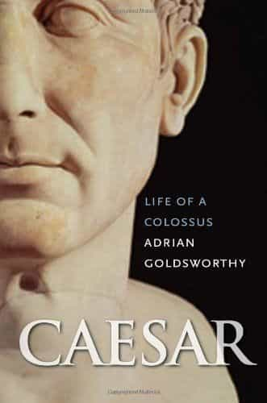
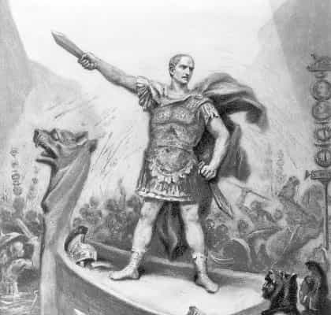
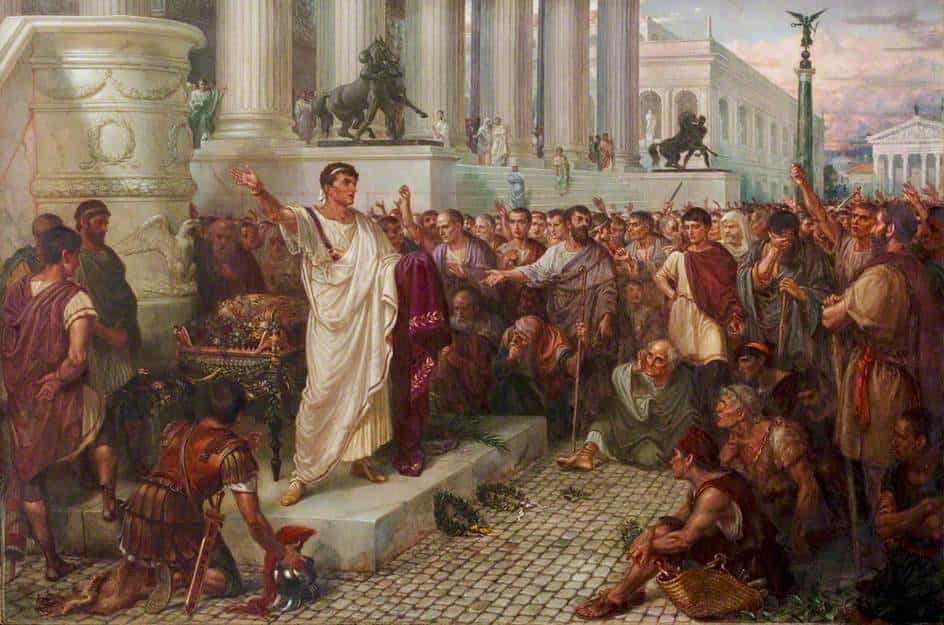

Libertas is a young bard traveling along the endless road to self-improvement and recounting his adventures. You can follow him on Twitter.


I always begin a new year by reading a biography of a great and successful man. Roosh’s big ass book challenge of a few years ago was part of my reasoning for this process. Indeed, to be a great man, you have to learn from the other great men that came before you – what they did, how they did it, and the underlying reasons that caused them to be successful.
Julius Caesar always fascinated me because of the massive list of his accomplishments and his palpable charisma that still seems to reach you even 2,000 years later. Usually, Caesar is remembered as a great soldier, but his life was far more complete than that. He was a great entertainer, seducer, statesman, writer, and more.
The noted classical historian Adrian Goldsworthy goes over the unlikely roller coaster career of Julius Caesar in his Caesar: Life of a Colossus. When you read this and other biographies about Julius Caesar, you draw the following lessons on leadership and power.

If you’re familiar with the work of Scott Adams, you’ll recall the concept of a “talent stack,” where it’s better for you to have a B or B+ in a lot of different skills rather than one A and a list of Cs.
When you look at the life of Julius Caesar, it’s clear that he had a massive stack of abilities that he was very good in, whether it be rhetoric, soldiering, or tolerance for risk and conflict. There was almost nothing that he wasn’t at the very least good in, compared to his rivals like Pompey who had a talent stack that had far less depth.
Julius Caesar decided what talents he needed on his path to domination in his own time. Now think of your own future and where you want to be. Done? Now ask yourself what skills you’ll probably need to get there. Now do a little each day to get a solid B in each of them.
Julius Caesar’s Commentaries on the Gallic (and Civil) War still stand as a classic to students of both Latin and military history. His contemporaries like Cicero marveled at their simplicity and the directness of the action that left the reader without doubt as to what had transpired. The Commentaries weren’t simply for posterity’s sake, however, they allowed Caesar to build his reputation and keep in touch with his base back in Rome while he was abroad for so many years. By staying in the forefront of the people’s minds, his power grew.
Even when he was just starting out and had no power, Julius Caesar found ways to stand out. He was actually one of the noted fashionistas of his era, always dressing more uniquely than those around him:
Caesar reveled in standing out from the crowd, and dressed in a highly distinctive way. Instead of the normal short-sleeved senator’s tunic, which was white with a purple stripe, he wore his own unconventional version. This had long sleeves that reached down to his wrists and ended in a fringe. Although it was not normal to wear a belt or girdle with his tunic, Caesar did so, but perversely kept it very loose. Sulla is supposed to have warned the other senators to keep an eye on that ‘ loose girded boy.’ Caesar dressed so that he was recognizably a member of a senatorial family, but at the same time marked himself out as not quite the same as his peers.
Later on in life, Julius Caesar also made it a priority to stand out in politics as well, bringing cases against noteworthy Roman elites and supporting contrary causes, such as his argument not to execute those men involved in Catiline’s conspiracy.
Julius Caesar went out of his way to be a source of pleasure. He was friendly and charming to everyone that came in contact with him. Even in heated political debates he didn’t lose his humor. One of the best examples of his social intuition was this one:
Socially Caesar entertained and was entertained by the local aristocracy, many of whom had only possessed citizenship for a generation or so. On one occasion in Mediolanum, he dined at the house of one Valerious Meto, and the party was served with asparagus accidentally dressed in bitter myrrh rather than the normal olive oil. Caesar ate it without comment or change of expression, and rebuked his companions when they loudly complained. The patrician from one of Rome’s oldest families was the perfect guest and always a lively companion.
This won him many friends that he of course influenced.
Julius Caesar was a noted popularis politician, meaning that he was associated with popular causes. In his early career he tried his hardest to support the popular general Pompey (already a marquee name) and staged grand and spectacular entertainments during his time in the post of Aedile which oversaw public infrastructure. In the voting assemblies, he associated himself with a broad range of citizen classes and in the courts he prosecuted unpopular public officials.

When he was dictator, Julius Caesar enacted a legislative program that addressed all segments of society. In his youth, he lived in a neighborhood that wasn’t exactly prestigious, but it did allow him to converse with the poorer classes that Roman senators often didn’t know very well. To give it a modern analogy, Julius Caesar didn’t live in a bubble. He knew senators, equestrians, and the poor. He even championed the residents in the provinces abroad, such as those in Cisalpine Gaul who hadn’t been given citizenship but wanted it. When he received his Gallic command, this came back to help him, big league.
Always look to cooperate with many people and classes. See if their interests entwine with yours. Don’t make enemies unnecessarily.
Famously, he knew the names of all of his centurions, building with them an intimate rapport. He trained alongside the men with equal physical vigor as they exercised. Further:
When Caesar addressed his troops it was always as ‘comrades,’ never ‘men’ or ‘soldiers.’ He and they were all good Romans, serving the Republic by fighting against its enemies and also winning glory and plunder along the way, which he took to share with them most generously. Mutual trust grew up gradually between the commander, his officers, and soldiers as they came to know and rely on each other. Pride in themselves and their units was also carefully fostered. Decorated weapons, some inlaid with silver or gold, were issued, most probably as rewards for valor, marking the recipients out as exceptional soldiers and making them feel special. The Roman military system had always sought to encourage boldness in its soldiers, but in Caesar’s legions this ideal was taken to an extreme.

Julius Caesar knew that facts are of limited value in persuasion. He studied in the best rhetorical school of his time in Rhodes. Although he had many instances of brilliant and persuasive oratory, one of Caesar’s best was when he dissuaded mutinous legions, beginning by addressing them as “citizens” instead of “comrades.” This shocked them, making them feel less worthy in the eyes of their beloved commander. In this greater state of suggestibility, Julius Caesar got them all to beg him to take them back. The coup de grace was when he said he would indeed take them all back – save the Tenth Legion. Their pride slighted, the Tenth even begged him to decimate them, to show that the unit was worthy of his praises.
The speech had to be cut here for brevity, but you should study it intensely.
One notable instance of this was when Julius Caesar used his brand of clemency against the Pompeians in the civil war, who were envisioning being increasingly punitive even against those who had remained neutral during the hostilities. Caesar’s clemency made his enemies grow increasingly unhinged, and as a result, made them lose face with the public and disrupted their strategy in the field.
And that episode was far from the only time he did this.
One of Julius Caesar’s calling cards was that he always took care to dictate the news cycle rather than having it dictate him. His Commentaries of course are the best example of this, but he also did this on the tactical level to rapidly control the flow of information in his favor. In Gaul, for example, a defeat in a skirmish began to be talked of as a major setback for the Romans. Not wanting to embolden his enemies, Caesar mobilized immediately and reversed the situation with swift punishment, not allowing the flow of information to embolden the Gauls who may want to take up arms against him.
The mistake that ultimately caused Julius Caesar’s undoing was the way that he displayed power as dictator after his victory in the civil war. His typical dress consisted of the following garb:
Apart from his formal powers Caesar stood out in many ways. His family claimed descent from the kings of Alba Longa, a city that no longer existed since the Romans had absorbed it early on in their history. On formal occasions he now took to wearing what he claimed was the costume of these monarchs, notably calf-length boots in red leather. The reddish-purple tunic and toga of a triumphing general, which he now wore at festivals and formal meetings, also had regal associations. To this he added a laurel wreath – an honor that he is said to have especially relished because of his growing baldness – and in 44 BC this seems to have been replaced with a gold version.
He also refused a crown from Mark Antony, but it only served to associate Caesar with kingship. Though the people loved him, Caesar lost touch with a crucial segment of society – that class of senators who held the old Republican ideals in high esteem. To them, his behavior was a bridge too far. It served too easily as confirmation bias that he aspired to a formal kingly role. This made it easier for people like Cassius and Brutus to persuade themselves and others that killing him was a necessary act of tyrannicide.
Julius Caesar, knowing the republican ethos of Rome, should have made a rare display of modesty and surrendering some of his power (if only in appearance) after attaining the dictatorship to dissolve any rumors of him desiring supreme, un-republican power. He did the opposite and it cost him his life. This was a mistake that his adopted son and heir, Octavian, the future Emperor Augustus, would not make.
And neither should you.
Read More: The 5 Most Decisive Moments In A Man’s Life